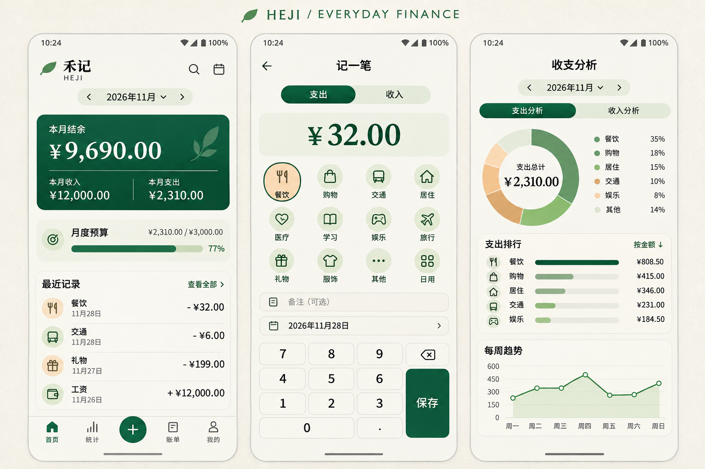
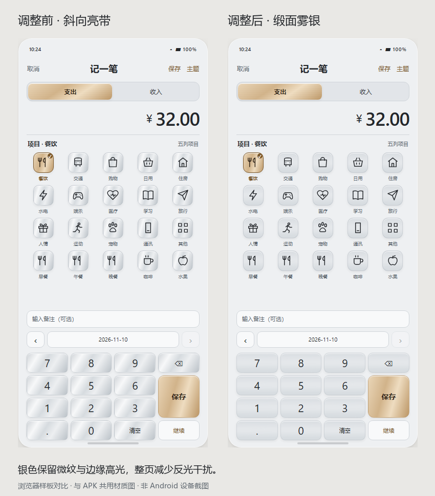
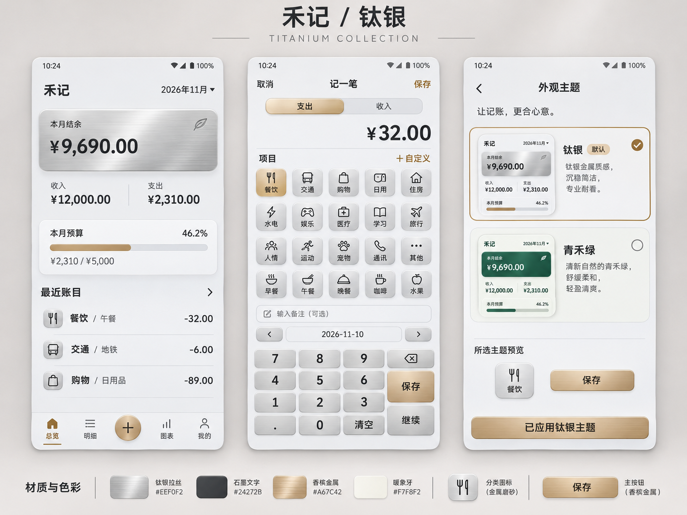
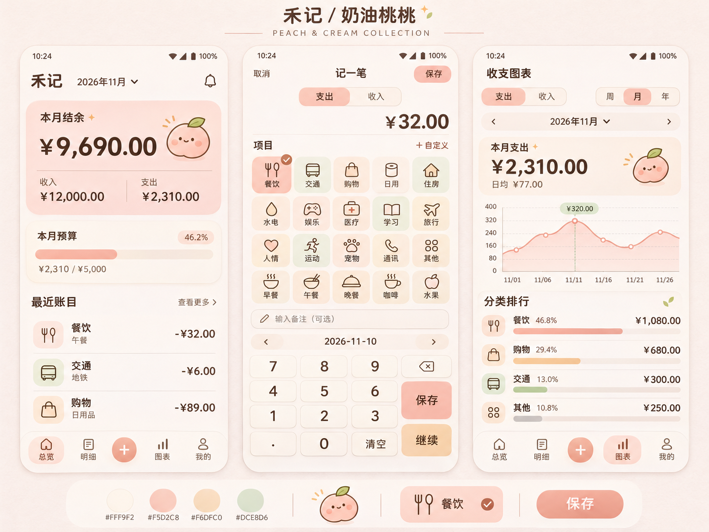

MYACCOUNT / PRODUCT & ANDROID DELIVERY禾记个人记账 APP
调研、需求与设计说明
Android 优先 · 离线个人记账 MVP
2026 年 11 月 10 日 · 需求与实现更新 / 已确认 MVP 方向
包含官方功能证据、业务规则、开发拆分、验收条件与原型交接。
已提供原生 Android 0.3.1 调试 APK；按用户要求未安装测试。

封面图为 AI 视觉探索，具体金额、日期和功能以本文需求及交互原型为准。
鲨鱼记账功能调研
调研日期：2026-11-04（中国标准时间） · 对象：官方鲨鱼记账 Android / iOS 普通版、iOS Pro · 方法：官网、开发者在应用商店发布的介绍；图表栏目补充参考有明确体验环境的历史体验报告及教程，并单独标注证据等级。未安装登录实测，未购买会员；下文的“已确认”仅代表官方公开资料支持。
1. 调研结论
鲨鱼记账值得借鉴的主线是：缩短日常录入路径，用明细和图表反馈消费，再以预算和提醒帮助坚持记账。对于本项目，建议围绕这条主线开发 Android 个人记账 MVP，暂不引入社交、订阅、自动识别和复杂资产管理。
身份核对：Android 包名 com.shark.jizhang，小米商店开发者为“鲨鱼快游网络技术（北京）有限公司”；iOS 普通版 ID 为 1079718756，Pro 为 1163515895，开发者显示 Beijing Shark Pioneer Network Technology Co.,Ltd。Android 商店页面本次显示版本 5.87.0，更新日期 2026-11-03。这些信息仅用于确定调研对象，不代表所有渠道同步到同一版本。Android 官方商店资料 · iOS 普通版 · iOS Pro
搜索结果中还有不同开发者发布的同名应用。不能将其语音、OCR、Siri、多账本等描述并入本次调研；本报告不采用此类结果。
2. 功能证据清单
下表是公开资料层面的功能整理。“官网”不能直接证明 Android 当前版本的入口或免费权益；“Pro”仅证明该 iOS 产品的介绍中包含相关能力。
| 模块 |
已确认的公开能力 |
证据 / 平台 |
本项目建议（自主规划） |
| 快速记账 |
简短录入流程，以快速完成一笔记录为卖点 |
Android 商店 |
P0：类别、金额、日期、备注，保存后立即可见 |
| 统计分析 |
消费走势；Pro 介绍另列饼图分析 |
Android 商店、Pro |
P0：周/月/年趋势、分类排行、历年收支与逐月下钻；具体参考见下文补充 |
| 备注辅助 |
根据历史输入提供备注提示 |
普通版 |
P1：先完成稳定输入，再优化联想 |
| 数据同步 |
登录后账目同步云端 |
普通版 |
P1：MVP 先离线存储与本地备份 |
| 记账提醒 |
可配置每日提醒时间 |
Android 商店 |
P1：用户主动开启通知 |
| 桌面入口 |
iOS 普通版列有小组件快速记账 |
普通版 |
P1：单独评估 Android 小组件 |
| 预算 |
月预算、分类预算；Android 简介提到超支预警 |
官网、Android 商店 |
P0：总预算与分类预算，站内预警 |
| 数据导出 |
导出为 Excel 文件 |
官网 |
P0：CSV 明细与 JSON 完整备份；不能把 CSV 宣称为原生 XLSX |
| 周期记账 |
设置重复的定时记账 |
官网 |
P1：需处理重复生成及错过执行 |
| 收支日历 |
按日期查看收支 |
官网 |
P0：月份切换、每日金额、点击看明细 |
| 搜索 |
检索已记录的账单 |
官网 |
P0：类别/备注关键词及收支筛选 |
| 应用保护 |
官网列手势密码；Pro 列解锁保护、首页金额隐藏 |
官网、Pro |
P0：金额隐藏；P1：系统生物识别应用锁 |
| 统计周期 |
自定义每月开始日期 |
Pro |
P1：MVP 固定自然月 |
| 标签 |
通过标签查看账目汇总 |
Pro |
P1：先保证分类统计闭环 |
| 主题 |
提供多套外观 |
Pro |
P1：MVP 只交付一套清晰的浅色主题 |
官网关于安全的文字属于产品方自述，不能作为加密实现、独立审计或“绝对安全”的证据。本项目的安全要求另行定义，不照搬这类承诺。
3. 免费版、VIP、Pro 的边界
- 普通版商店标记为免费下载并有应用内购买；Pro 是单独的 iOS 产品。Pro 说明其与 Apple 账号关联，并明确 Pro 与 VIP 不是相同权益集合。普通版 · Pro
- 普通版介绍中的订阅文案与 App 内购买商品列表存在不同价格记录，因此不把某一个列表价格当作当前统一成交价，也不将 iOS 价格外推到 Android。当前 Android VIP 价格、活动、试用和逐项权限仍需在对应客户端购买页核实。普通版商品页
- 可确认官网介绍了预算、导出、搜索等功能，但仅凭官网无法认定其在 Android 普通版中全部免费，或全部仅限 VIP。
- 官网会员/自动续费协议页面本次抓取失败，未据此补全权益。本项目 MVP 不设付费墙是产品选择，不是鲨鱼记账现状。
4. 信息架构与流程借鉴
以下是根据已确认能力整理的本项目流程，并非逐屏复刻或客户端实测结论。
当月总览→记一笔：类型 / 类别 / 金额→本地保存→明细 / 日历 / 统计 / 预算→编辑删除后重算
设计借鉴：主记账入口始终可达；默认日期与类别减少重复操作；总览直接回答“本月花了多少、还剩多少”；分类与原始明细之间可追溯；预算提示必须能看到计算依据。
本项目不使用竞品名称、商标、吉祥物、官方图片或其页面布局作为交付 UI。临时品牌为“禾记”，视觉与组件独立设计。
5. 未核实项目与实机调研清单
当前证据不足以确认官方产品是否提供：OCR/语音识别、全自动支付账单抓取、共享账本、银行账户连接、退款关联、资产负债和批量账单导入。它们不是“确定没有”，也不应作为已有功能写入对标矩阵。
正式立项后，若要做到逐项竞品对齐，可补一次 Android 实机走查：记录安装来源与版本 → 游客/登录入口 → 新增编辑删除 → 预算设置 → 搜索与导出 → 网络中断 → VIP 购买页权益。只收集测试账目，记录截图、时间、前置条件和结果。上述补充不阻塞个人 MVP 的开发。
6. 图表栏目补充调研（本轮用户明确要求）
上一版只实现按月分类统计，遗漏了长期记账用户需要的“年内各月比较”和“历年账单”。本轮将这两项纳入 P0，并把原型底部的“统计”改为“图表”。
| 证据 |
可支持的观察 |
限制 |
| 官方 Android 商店 |
开发者介绍包含消费趋势分析 |
未展开说明所有周期和交互细节 |
| 2019 年产品体验报告 |
作者明确体验环境为 iPhone 7、iOS 12、V2.1；描述图表的周/月/年切换、总额、平均值、折线与分类排行，以及另一账单入口的年/月收支 |
第三方历史资料，不能证明 2026 年 Android 版本的逐像素界面或会员权限 |
| 2024 年图表周期设置教程 |
教程标注 Android 设备及鲨鱼记账 5.12.3，列出周、月、年默认周期 |
仅用来交叉确认周期结构，未据此推定当前购买权益 |
本项目采用的组织方式是：支出/收入 → 周/月/年 → 选择历史周期 → 总额和平均值 → 趋势 → 分类排行 → 原始账目。另将“历年账单”放在图表页，展示年汇总和可展开的 12 个月收支，这是为本项目作出的入口整合，不声称是竞品当前的相同位置。
本项目采用自己的配色和组件；没有复用竞品图片。周一开始、平均值分母、未来月份展示方式、演示样本金额等均是独立定义的产品规则，不是对鲨鱼内部算法的推断。
7. 来源登记
| 编号 |
来源 |
本次用途 |
访问日期 |
| S1 |
鲨鱼记账官网 |
预算、导出、日历、定时记账、搜索、保护能力 |
2026-11-04 |
| S2 |
小米应用商店 |
Android 身份、版本、基础功能 |
2026-11-04 |
| S3 |
Apple 普通版 |
iOS 身份、小组件、订阅及同步说明 |
2026-11-04 |
| S4 |
Apple Pro |
Pro 能力与版本区别 |
2026-11-04 |
| S5 |
站酷历史体验报告 |
图表与年/月账单结构的历史参考；非当前版本认证 |
2026-11-04 |
| S6 |
百度经验周期设置教程 |
周/月/年设置的历史交叉参考 |
2026-11-04 |
页面内容可能继续变化；本报告是该日期的公开资料快照。后面的 PRD 是独立产品需求，功能优先级与规则均为本项目建议。
禾记 APP 产品需求文档（PRD）
版本：v1.1 · 日期：2026-11-10 · 项目目录：MyAccount · 状态：已提供 Android 0.3.1；钛银采用缎面雾银，保留奶油桃桃与青禾绿主题切换
用户已确认方向：个人日常记账，优先实用 MVP。 Android 优先；“禾记”为临时名称。人民币、中文、单用户、单账本、离线使用为本轮设计假设，可在开发前调整。
1. 产品定位与目标
为希望掌握日常花销、又不愿维护复杂财务表格的人，提供一款打开就能记、回看就能懂的个人记账工具。核心价值是持续记录与可靠回看，不提供投资建议，不接入支付或银行卡交易。
典型场景：午饭后记 32 元；晚上补记当天地铁和咖啡；月中查看餐饮预算；月底导出账目；换设备前备份恢复。
目标与验收方式：
| 目标 |
设计指标 / 验证方法 |
| 录入轻量 |
热启动后，常用类别支出记录以 5 秒内完成为可用性目标；5 名目标用户各试 3 笔，记录中位数，不把宣传用语当实测结果 |
| 离线可靠 |
飞行模式可完成增删改查、统计与备份；强制结束并重启后已保存账目一致 |
| 金额可信 |
所有求和、分类、预算使用同一整数分模型；固定样本比对达到逐分一致 |
| 可找回数据 |
导出完整备份后能在干净安装中恢复；恢复前可预览并备份旧数据 |
| 低维护成本 |
首版不依赖注册或远程服务，无广告 SDK、无订阅流程 |
以上是待验收目标，不代表当前 HTML 原型或 Android 首版已经达到；原生开发状态与实际验证范围见《14-缎面雾银材质更新》。
2. 用户故事
| 编号 |
用户希望 |
成功条件 |
| US01 |
消费后快速记一笔 |
首页一键进入，默认今天，选类别输入金额即可保存 |
| US02 |
补记或纠正遗漏 |
能选历史日期；修改后列表、汇总、图表与预算同时更新 |
| US03 |
找到某笔账 |
按月份、收支类型、类别、备注关键词查找，并可进入详情 |
| US04 |
知道钱花在哪里，回看历年变化 |
周/月/年趋势、年内月份比较、历年收支可见；分类汇总可追溯至同周期明细 |
| US05 |
控制本月支出 |
设定总预算和分类预算，看到剩余及超支金额 |
| US06 |
自己保管账目 |
可导出 CSV；完整 JSON 备份可验证、恢复 |
3. 范围与优先级
P0 为首发必须闭环；P1 为首版稳定后增强；P2 为需求验证后再立项。原型范围见设计文档，不能将网页演示等同原生完成。
| ID |
能力 |
优先级 |
首版边界 |
| F01 |
新增收入/支出 |
P0 |
类别、金额、日期、备注；保存即更新 |
| F02 |
账目详情、编辑、删除 |
P0 |
删除二次确认，成功提示；编辑保留 ID |
| F03 |
月度总览 |
P0 |
收入、支出、当月结余、预算、最近账目 |
| F04 |
明细、搜索、筛选 |
P0 |
月份、类型、类别、关键词；日分组 |
| F05 |
收支日历 |
P0 |
月视图、每日收支、选日过滤；不记未来账 |
| F06 |
周/月/年图表与历史账单 |
P0 |
收支切换、历史周期、日/月趋势、总额与平均值、分类排行、年/月收支表与明细下钻 |
| F07 |
预算 |
P0 |
自然月总预算与分类预算、80%/100%站内提示 |
| F08 |
本地持久化 |
P0 |
无需登录；数据库事务；失败不报成功 |
| F09 |
导出与完整备份恢复 |
P0 |
CSV 为当月全部账目；JSON 为所有月份及预算设置 |
| F10 |
设置与金额隐藏 |
P0 |
主要金额遮罩、演示数据重置仅原型提供 |
| F11 |
自定义项目与历史备注 |
P0 |
新建、改名、换图标；同项目历史备注点选；排序、停用仍待后续设计 |
| F12 |
记账提醒、系统应用锁 |
P1 |
主动授权通知；系统生物识别/凭据 |
| F13 |
定时账单、标签、统计周期 |
P1 |
补发与幂等机制；薪资周期可选 |
| F14 |
云备份/多设备同步、小组件 |
P1 |
先验证需求；同步需冲突与删除传播设计 |
| F15 |
多账本、账户与转账 |
P2 |
独立账本隔离；转账不算消费，另立数据模型 |
| F16 |
共享账本、OCR/语音、导入外部账单 |
P2 |
成员权限、识别确认、去重与隐私另行设计 |
| F17 |
外观主题 |
P0 |
默认钛银、可选奶油桃桃与青禾绿；本机记忆，切换保留录入与筛选 |
首版不做会员体系、社区、理财入口、多币种换算、借贷还款和自动抓取支付通知。理由是其成本和数据复杂性超出本次“个人日常记录”目标。
4. 信息架构
底部导航：总览 / 明细 / ＋记一笔 / 图表 / 我的。图表包含“趋势分析”和“历年账单”。预算由总览预算卡及“我的”进入；日历在明细页内切换。新增和详情使用覆盖层，返回时保留原页筛选。
| 页面 ID |
页面 |
关键内容 |
主要动作 |
| P01 |
总览 |
月份、月结余、收支、预算、最近账目 |
换月、隐藏金额、记账、查看预算/详情 |
| P02 |
记一笔 |
收支类型、类别网格、金额键盘、日期、备注 |
保存、取消、编辑回填 |
| P03 |
明细 |
搜索、类型/类别过滤、分日流水、日历模式 |
过滤、选日、查看详情 |
| P04 |
账目详情 |
金额、类型、类别、日期、备注 |
编辑、确认删除 |
| P05 |
图表 |
支出/收入、周/月/年、历史周期、总额/平均值、折线趋势、分类排行 |
前后周期、日期/年份选择、趋势点选、分类明细 |
| P08 |
历年账单（图表内） |
年度收入/支出/结余、展开后的12个月 |
展开年份、进入年趋势、进入具体月趋势 |
| P06 |
预算 |
月总预算、分类预算、已用/剩余 |
编辑总额与分类额 |
| P07 |
我的 |
本地数据概况、备份导出、恢复入口 |
CSV/JSON 导出、恢复、隐私开关 |
| P09 |
外观主题 |
三套主题缩略图、当前选择、默认标记 |
点击应用、本机记忆；我的与记账页可进入 |
5. 功能细则与验收
F01 / F02：记账与维护
- 账目类型
expense 或 income；金额必须为正，符号由类型决定。新增默认支出；每次点“＋”默认选中当前排序的第一个项目。切换收支类型时使用该类型当前排序的第一项；自定义项目同样适用；编辑已有账目回填原项目。日期遵循下方连续记账规则。
- 金额支持两位小数，范围 0.01–999,999,999.99 元；以字符串解析到整数分，禁止浮点直接累计。拒绝空、零、负数、科学计数法、NaN、溢出；第三位小数不静默四舍五入。
- 日期采用账本当地日期
YYYY-MM-DD，可选择 2000-01-01 至今天；日期型账目不随时区换算而跨日。MVP 不允许未来日期，以免与计划账单混淆。
- Android 新一轮启动默认使用系统今天。用户手动选择日期后，本轮使用期间所有后续新增账目持续沿用，保存、切换分类、返回总览、浏览历史和切到后台都不自动改回今天；只有手动再次选择或重新开启一轮使用才改变。旋转屏幕不重置；只打开旧账目编辑不修改连续记账日期。日期不跨冷启动持久化。
- 日期栏左右分别提供前一天、后一天按钮；点击按自然日切换并记住日期，跨月、跨年、闰日正确处理。2000-01-01 的前一天、今天的后一天按钮置灰禁用；中间日期仍可打开选择器。切日保留金额、备注与项目。
- 备注可空，最多 100 个 Unicode 字符；去除首尾空白；保存原文，展示与导出须防脚本/公式注入。
- 历史备注默认隐藏且不占高度；点击备注输入框后，在框上方显示单行可左右滑动的小标签。候选来自当前收支类型、当前项目下已保存的账目，去除空白与重复，按最近保存 / 修改时间排列，最多 30 条。点击候选完整填入备注，收起候选与系统输入法并回到数字键盘；完成输入、收起输入法或转回金额框时也隐藏候选。可再次点击备注继续选择；没有记录时正常手动输入，不混入其他项目的备注。
- Android 预置 40 个支出项目、12 个收入项目，内置 72 个离线图标。支持最多 100 个自定义项目，名称为 1–12 个 Unicode 字符，同收支类型内不能与预置或自定义项目重名。图标选择默认展示未使用图标，也可切换完整图标库。
- 自定义项目可以改名和换图标，保持稳定 ID；历史明细、分类统计、CSV 与预算统一显示更新后的名称和图标。已有账目或分类预算引用时禁止删除；预置项目保留。自定义项目参与查询、统计、预算、完整备份和恢复。
- 历史备注条高 36dp，标签高 32dp、12sp，单个最大宽 160dp，长文字省略但点击采用完整内容；无历史则不占高度。仅编辑备注且系统输入法可见时隐藏 APP 数字键盘；收起输入法、点击完成或采用历史备注后恢复数字键盘，保留金额与备注。
- 金额框获得焦点、再次点击金额框、从后台恢复或窗口重新获得焦点时，使用 APP 数字键盘并抑制系统输入法恢复。系统输入法延迟出现时也按当前输入框处理；金额框仍有焦点时不能隐藏 APP 键盘。编辑备注时允许系统输入法，页面暂时离开前台时不主动将备注焦点转到金额。
- 记账项目区每行 5 列，图标容器保持 40 × 40dp，压缩格间距；备注最小高度 38dp，金额分割线上下留白收紧。备注与日期固定在数字键盘上方，项目列表独立使用剩余空间滚动。
- 项目按最近明确点选倒序排列，同一项目不重复，未点选项目保持初始顺序；自定义项目也参与。收支类型分别显示所属项目，本机记忆排序，重开保留；查看历史或默认选中不会更新时间顺序。排序偏好不改变分类 ID 或财务备份。
- 预置支出类别：餐饮、交通、购物、日用、住房、水电、娱乐、医疗、学习、旅行、人情、其他。收入：工资、奖金、兼职、其他收入。MVP 不允许删除预置类别。
- 数字键盘提供“保存”和“继续”：保存成功后退出录入页；继续成功后留在录入页，清空金额和备注、保留类型/项目/日期，并为下一笔生成新 ID；刚保存的备注可立即选用。顶部保存与键盘保存一致。
- 保存期间禁用表单与重复提交；本地事务落盘成功后执行对应的退出或继续行为。失败保留输入并提示重试，重试同一笔沿用稳定 ID。
- 正常覆盖升级沿用相同包名、签名与私有数据库，不能在启动或升级时清空账本。数据库迁移保留账目、备注、项目、预算和设置；不支持的迁移报错保留原库。构建核对固定证书摘要，禁止原签名缺失时静默生成不同密钥。
- 从记账页进入主题选择再返回，保留金额、备注、项目、日期与编辑账目 ID；不能因此丢失输入、重置日期或额外保存账目。
- 详情编辑复用表单，保留
id、createdAt；更新 updatedAt。删除弹窗显示金额和备注/类别，需明确确认；事务完成后排除其全部统计。
- 返回、取消或关闭覆盖层时，如果表单有修改，提示“放弃本次输入？”；无修改直接退出。
验收：新增 32.00 元餐饮后月支出增 32.00；改成 28.50 后相对原始值增 28.50；删除后恢复原始月汇总。连续点击保存只产生一个 ID。异常金额不能写入数据库。
F03 / F04 / F05：总览、明细与日历
- 默认本月，跨年换月允许；选择空月份显示零汇总与“还没有账目”，不复用上月图表。总览“最近账目”限定所选月份，按账目日期降序，同日按创建时间降序。
- 月结余 = 当月收入 − 当月支出；不是现金余额、资产或银行余额。负结余显示负号，不用“亏损”描述。
- 明细以月份为基础范围；收支、类别、关键词、日期条件取交集。关键词匹配类别名和备注，忽略拉丁字母大小写；清空搜索保留其他筛选。
- 筛选区显示结果笔数及筛选条件；所有条件可清除。切换到不相容收支类型时清空类别筛选。筛选汇总与总览月汇总采用不同文案，避免把局部金额当全月。
- 明细列表每日日期右侧分别显示当天支出、收入合计；按当前月份、类型、类别、关键词、日历日期的筛选交集计算，先聚合全部匹配记录再执行 80 笔显示限制。某类型无记录显示 0.00，隐藏金额同时作用于合计及无障碍描述。修改跨日账目后重算两日。
- 所有自绘列表项只绘制一条 1 个物理像素的底部分隔线，不画左右或顶部边框；统一覆盖账目、设置、项目管理、排行、预算、历年收支表，移除重复分隔视图。
- 明细顶部将月份移入标题栏，搜索与日历切换同行，收支切换与类别筛选同行；清除筛选按钮仅在有条件时显示。标题栏 56dp、账目最小行高 60dp，保留主要按钮 48dp 点击区域。
- 日历按周一开始，显示真实每月天数，闰年 2 月正确。日格收支聚合遵循当前筛选；日列表再叠加所选日期。月末不可渲染不存在的日期。
- 无匹配显示“没有找到相关账目”，保留输入；空账本显示“记下第一笔开销”并提供记账入口。
验收：备注输入“咖啡”仅匹配相关记录；切至收入不出现支出类别；从 2026-11 切到空月后所有金额归零；从统计中的餐饮下钻后显示相同合计。
F06：周/月/年图表与历年账单
页面组织：顶部支出/收入切换，其下为周/月/年分段，再显示可前后切换的周期标题。主体依次为总额与平均值、折线趋势、分类金额/占比排行；分类环图作为折叠补充。顶部提供“历年账单”入口，避免只看到当月消费结构而无法比较月份。
周期和导航：
- 周：自然周周一至周日，横轴为 7 天；跨月、跨年时仍使用完整的同一周范围，不先按月过滤。
- 月：自然月，横轴为当月实际日期，正确处理 28/29/30/31 天。
- 年：自然年，横轴固定为 1–12 月，纵轴为对应月的支出或收入合计。
- 左右箭头切换上一个/下一个周期；点击标题可选择年份、月份或某日所在的周。最早可选 2000 年，禁止选择完全位于未来的周期。
- 图表顶部采用 56dp 标题栏，“趋势分析 / 历年账单”切换放入标题栏；收入/支出与周/月/年同行，收紧汇总卡片和间距，趋势绘图区保持 174dp。历年累计收支并列显示，减少重复标题与顶部留白。
- 初始图表默认本月。图表独立保存当前周期和基准日期，切换类型不丢失周期；其他页面使用自己的所选月份。通过总览/明细换月时更新图表基准日期；在图表中浏览历史不会悄悄改掉总览月份。
- 过去的无记录日期/月显示 0；未来日期/月使用「—」且不纳入折线，避免把尚未发生当成消费下降。无记录周期保留零汇总和时间轴，分类区显示空状态。
金额、平均值与图表：
- 所选类型总额 = 所选周期有效账目的金额和；分类分母使用同一周期、同一收支类型的总额。所有分类和趋势桶的金额加总必须等于总额。
- 周/月的日均 = 总额 ÷ 已历自然日数（含零记录日、含今天）；完整历史周为 7 天、完整历史月为实际天数。当周/月只算到今天；早于支持日期的天数不计入分母。
- 年度月均 = 总额 ÷ 已历月份数：完整历史年除以 12，当年除以当前月份编号，包含正在进行中的月份。界面明确该口径，不声称是完整月份平均值。
- 平均值四舍五入到分，仅用于展示；不回写账目或预算。当前周期显示截至日期；不做部分月份与完整月份的误导性同比/环比。
- 分类按金额降序，同额保持预置类别顺序。占比保留一位小数；分母为零时不计算占比。显示占比舍入可造成合计 99.9%/100.1%，金额不能丢分。
- 折线点可以点击/键盘选择，显示精确金额。年图点某月后“查看本月”进入对应月趋势；周/月点某日后“查看明细”打开当日同类型账目。
- 分类排行点击后打开当前完整周期的分类明细，不能把年图明细错误限制在当前月。明细允许继续查看、修改、删除记录；返回后保留图表周期并重算。
- 金额隐藏应同步覆盖总额、平均值、数据点提示、坐标金额、分类金额和历年表。各视图都从账目动态计算，不使用静态假曲线。
历年账单：
- 从最早记录年份至当前年份按年倒序展示；中间缺失年份仍显示零汇总。每年一行收入、支出、结余（收入减支出）。空账本显示当前年份的空记录。
- 展开年份显示 1–12 月的收入、支出与结余；已历无记录月为 0，未来月为「—」并禁用下钻，当前月标记“进行中”。
- 点击月行进入该月趋势，点击“查看某年趋势”进入该年图表。年汇总与 12 个月合计必须一致；历史总览累计值与全量账目一致。
- 原型新增 2024-01 至 2026-10 的虚构历史数据。新浏览器默认加载；旧浏览器已有数据不会自动覆盖或混入样本，只有点击“添加历史演示账目”并确认后追加，同 ID 不重复插入。
验收：2026-11 示例支出 2,310.00；2026 年累计支出 32,580.00，11 个已历月份月均 2,961.82；2025 全年支出 35,972.00，2025-02 支出 2,883.00。年/月/分类明细逐分一致。测试跨年周、闰年、空年度、当前年未来月份、历史账目跨月编辑与删除、收入切换、金额隐藏和旧数据保留。
F07：预算
- 每个自然月一份独立预算；未设置的月份显示“设置预算”，不能自动当成上月预算。总额/分类额为空代表未设置；有效值与金额字段相同且大于零。
- 分类预算只对支出类别生效；各分类已分配预算之和不得超过月总预算。降低总预算到已分配金额以下时，说明差额并阻止保存；总预算未设置时不能设置分类预算。
- 已用 = 同月全部有效支出；剩余 = 总预算 − 已用，允许负数并显示“已超支 X”。进度条视觉最大 100%，文字百分比可以超过 100%。未设预算不显示虚假的 0% 或无限百分比。
- 达 80% 提示“预算已用 80%”；达/超 100% 显示“预算已用完/已超支”。文案中性，不阻止继续记账。
- 当月日均可用 = max(剩余, 0) ÷ 含今天的剩余天数；仅本月展示，精确到分向下取整以免夸大额度。历史/未来月份不提供当前日均建议。
- 类别预算独立预警；未设置类别仍计入总支出。分类预算是总预算的分配，不能再叠加到总额。
验收：预算 5,000、支出 2,310，则剩余 2,690、使用 46.2%；改总额为 2,000 且分类分配合法时，超支 310；不能保存分类分配大于总额的方案。
F17：外观主题
- 默认钛银：浅银灰底色、石墨文字、细腻拉丝金属卡片与香槟金主要动作。奶油桃桃：奶油白、桃粉、淡杏与开心果绿，可可文字与少量原创桃子图案。现有暖纸色 / 森林绿以青禾绿保留。
- 入口为“我的 → 外观主题”，记账页也可进入；主题卡带缩略预览，当前项有勾选标记。点击即应用并保存本机偏好；未知值回退钛银。
- 主题覆盖全部原生页面、弹窗和系统栏。切换时保留录入、明细筛选、图表周期与滚动状态，不重建账目数据库，不改变备份格式。
- 预览与原生共享配色、金属材质与桃子素材；保持五列项目、数字键盘、保存 / 继续、日期与按需历史备注布局。文字保持深色实体，不让纹理或插画覆盖金额。
- 核对颜色、圆角、图标选中态、材质与布局边界，出现差异应修正。设备整屏视觉及主题恢复仍需实际验收，桌面预览不能代替原生安装验证。
F08 / F09 / F10：数据、导出与隐私
- 原生应用使用本地数据库，不把浏览器
localStorage 用作 Android 生产存储。无需登录可完成全部 P0。离线无阻塞占位请求。
- CSV：导出当前所选月份的全部账目，不随搜索过滤缩小。入口明确月份。字段为账目 ID、日期、类型、类别、金额、币种、备注；UTF-8 BOM，金额带两位小数，逗号/引号/换行按 CSV 转义；可能被表格解释为公式的文本加安全前缀。
- JSON：包含
schemaVersion、导出时间、全量账目、所有月份预算、金额隐藏偏好；金额是整数分。不得包含密钥和设备凭据。文件为明文，导出前说明“请妥善保管备份文件”。
- 恢复：选择文件 → 检查大小（首版上限 10 MiB）、JSON 结构、版本、类别/类型、金额范围、日期、备注长度、重复 ID、预算约束 → 显示笔数和覆盖说明 → 用户确认 → 备份当前数据并在单个事务中替换 → 显示结果。格式错误时原数据保持不变。
- MVP 只支持本应用备份恢复，不宣称支持导入鲨鱼/微信/支付宝的格式。恢复方式为全量替换，无模糊合并规则。
- 浏览器原型的存储不加密、可能被浏览器清理，仅用于演示；原生正式版应使用应用私有目录和系统级设备保护，应用锁另列 P1。隐藏金额只是屏幕隐私，不是加密，也不应隐藏 CSV/JSON 的真实导出值；导出时明确告知。
- 不申请通讯录、短信、定位或无障碍权限。文档选择/分享使用系统能力。无网络的本地模式不嵌入分析 SDK；如以后采集诊断须另行设计授权与脱敏，日志不得输出备注和完整财务明细。
验收：导出后在新数据环境恢复，各月账目与预算逐分一致；错误版本、负金额、未知类别、重复 ID、非法日期和超限文件必须被拒绝；用户取消恢复不改变数据。
6. 数据模型与不变量
| 实体 |
关键字段 |
约束 |
| Transaction |
id, type, amountMinor, categoryId, occurredOn, note, createdAt, updatedAt |
UUID/唯一 ID；金额为安全范围内正整数；类别与类型匹配；日期为真实当地日期 |
| Category |
id, type, name, iconKey, sortOrder, archived |
稳定 ID；P0 为只读预置集合 |
| MonthBudget |
month, totalMinor?, categoryLimits |
month 唯一；正整数或未设；分类总额 ≤ 总额 |
| Preferences |
currency, locale, hideAmounts |
P0 固定 CNY、zh-CN；只允许已声明字段 |
| BackupEnvelope |
schemaVersion, exportedAt, data |
白名单结构解析；拒绝不兼容版本 |
金额不变量：分为计算单位，元为显示单位；记录只存正金额；当月收入与支出由类型区分；合计使用 64 位整数并验证溢出；原型额外确保 JavaScript 安全整数范围。分类变更、日期跨月变更必须触发受影响月份的重新汇总。
首版没有账户余额实体，因此不能展示“总资产”。Android 0.2.0 增加独立收入项目“退款”，不会冲减原消费分类与预算；关联退款与消费净额统计属于后续能力。转账暂不支持，不能误记成收入/支出宣传支持资产管理。
7. 关键状态与错误
| 场景 |
反馈 |
数据处理 |
| 首次进入空账本 |
友好空状态 + 记一笔 |
不自动写入演示账目（正式版） |
| 保存成功 |
简短提示；保存返回来源页，继续留页清空金额/备注 |
原子提交后重算，下一笔使用新 ID |
| 保存失败/空间不足 |
保留输入，说明未保存 |
回滚事务，不报成功 |
| 删除确认取消 |
关闭确认框 |
原记录保留 |
| 输入错误 |
字段旁提示具体原因 |
阻止保存 |
| 无预算 |
显示设置入口 |
不做除零 |
| 预算超支 |
显示已超支与百分比 |
允许继续记录 |
| 无搜索结果 |
保留条件，提供清除 |
不改账目 |
| 恢复损坏文件 |
显示校验失败 |
不覆盖现有数据 |
| 中断/进程结束 |
重开只看到完整提交 |
不产生半条账目 |
8. 非功能要求
- 可访问性：关键触控区域至少 48dp；正文与背景对比度目标 4.5:1；图表有文字/列表等价信息，收支有符号和文字，不仅依赖颜色；字体放大 1.3 倍后关键操作可达。
- 性能目标：以 4GB 内存的中端 Android 设备、1 万条本地账目为基准，冷启动可交互 p95 ≤ 2 秒，保存反馈 p95 ≤ 300ms，月份聚合 p95 ≤ 500ms。正式实现后测量，不作为本次原型测试结果。
- 兼容：建议 minSdk 26 起评估；targetSdk 按实际发布渠道当期要求确定。覆盖 360–430dp 常见屏幕宽度、系统返回、软键盘和导航条安全区。
- 可维护：业务计算与 UI 分离；类别/颜色令牌集中维护；数据库迁移可回归；设置与账目升级不丢失。
- 安全：备注按普通文本渲染；备份输入严格校验；财务数据不写入异常上报；网络同步引入前另行评审冲突、认证、删除传播与备份政策。
9. 推荐开发拆分
以下为 1 名熟悉 Kotlin 的 Android 开发 + 兼职设计/测试 的粗估，合计约 24–35 人日，包含本轮历史图表扩展，不含商店审核、云端和 P1；需在技术验证后调整，不是交付承诺。
| 工作包 |
内容 |
估算 |
交付门槛 |
| A 基础与数据 |
项目、主题、数据库、类别、金额与日期规则 |
3–4 人日 |
离线写入与持久化验证 |
| B 记账闭环 |
总览、录入、详情、编辑、删除 |
5–7 人日 |
US01/US02、重复保存与失败处理 |
| C 回看分析 |
搜索、过滤、日历、周/月/年图表、历年账单和周期下钻 |
6–9 人日 |
年/月/日/分类/明细金额一致，跨年周和平均值正确 |
| D 预算与数据自主 |
预算、CSV、JSON 校验恢复、隐藏金额 |
5–7 人日 |
导出恢复往返与预算边界 |
| E 质量与发布准备 |
数据迁移、兼容、可访问性、性能、包签名配置 |
5–8 人日 |
P0 验收表全部通过，无数据丢失问题 |
原型阶段建议过 Kotlin + Jetpack Compose / Room。根据后续“复用 FilmWord 开发环境”的要求，首版现已采用 Java 原生 View + SQLiteOpenHelper，JDK 17、Gradle 8.7、AGP 8.6.1、compile / target SDK 35，最低 API 26。金额、日期、统计与预算规则集中在独立 Ledger 领域层，所有数据库操作在进程内同一工作队列执行，界面读取统一账本快照。实际实现和构建说明见《05-Android开发与打包说明》；本节工作量是原型阶段估算，不代表本次实际工时或验收结论。
10. 首发验收门槛
- P0 主路径可在飞行模式完成，重启后账目不丢。
- 至少覆盖零金额/小数/大金额、闰年、跨年、改日期跨月、重复提交、空账本、超预算、无匹配。
- 列表、统计、预算对同一组账目的计算一致；删除和改类能同步重算。
- 完整备份往返数据一致；损坏文件、未知版本、非法记录恢复不破坏原数据。
- 原生无强制注册，无假云同步状态，无未实现的会员入口。
- 将原型演示数据从正式安装包初始化流程中移除；正式新用户以空账本开始。
首版采用临时品牌“禾记”、最低 Android 8.0、全部预置类别；P1 的应用锁与提醒未纳入。最终品牌与商店发布策略仍可在后续确定。MVP 方向已由用户确认。
禾记原型设计与开发交接
版本：v0.2 · 日期：2026-11-04 · 类型：高保真可交互网页原型 + 独立视觉概念图；已补齐历史图表
1. 交付物与使用
prototype/index.html：直接双击，用 Edge/Chrome 打开；桌面展示画布含导航说明，窄屏为手机界面。design/sunburst-concept.png：按用户指定的 GPT Image 2.5 Sunburst 技能生成的视觉探索，可能含生成文字或数值误差，只用于风格参考。design/prototype-overview.png：由真实运行的 HTML 原型截取，作为实现后视觉预览。design/history-statistics.png：历史年度、历史月份、历年账单的实际原型截图拼图；prototype/index.html#charts-year 可直达年图，#charts-history 可直达历年账单。docs/需求与设计说明.html / docs/需求与设计说明.pdf：适合浏览、打印和分享的合并文档；Markdown 为可维护源文件。
最终交互、文字和计算以 HTML 原型及 PRD 为准。AI 概念图不是逐像素开发规格，也不表示已有 APK。
2. 视觉规范
临时品牌“禾记”，寓意日常积累。采用暖白纸张、森林绿主色与少量杏色，减少金融仪表盘的压迫感，保持数字清晰。
| 令牌 |
值 |
用途 |
| background |
#F7F8F2 |
主页面暖白底 |
| surface |
#FFFFFF |
表单、卡片与覆盖层 |
| primary |
#174E42 |
主按钮、品牌、选中态 |
| primary-soft |
#E6EDDF |
图标底、轻提示 |
| text |
#253B34 |
正文与金额 |
| muted |
#67766D |
辅助说明 |
| accent |
#EAC4A0 |
次级图表色 |
| danger |
#B04435 |
删除、超支等需注意状态 |
| border |
#E6E9E0 |
分隔与输入边界 |
字体使用系统中文无衬线，Windows 优先微软雅黑；数字使用支持等宽数字的系统字体。标题 22–28px，主金额 38–40px，正文 14–16px，辅助文字 12px；移动端正式实现按 sp/dp 转换并适配字体缩放。
间距以 4/8 为基准，页面横向 22px，主要卡片圆角 20–24px；主动作 48px 以上。图标用统一描边 SVG，避免把图标做成不可编辑的位图。全屏页面尽量一个主动作；危险操作始终配明确文字。
3. 页面与交互规格
| 页面 |
展示重点 |
交互与返回 |
| 总览 |
月份、深绿收支卡、预算卡、最近账目 |
换月同步明细/预算并更新图表基准日期；图表历史浏览独立；账目进入详情 |
| 记一笔 |
类型切换、醒目金额、类别网格、备注、日期、键盘 |
保存后返回来源；编辑模式回填；有修改关闭需确认 |
| 明细 |
月选择、搜索、过滤、列表/日历 |
日历点日期联动列表；空结果保留筛选 |
| 详情 |
类型与金额、类别、日期、备注 |
编辑进入记账表单；删除二次确认 |
| 图表 |
支出/收入、周/月/年、总额/均值、折线、分类排行 |
历史周期切换；选点看精确金额；年图下钻月图；同周期分类明细 |
| 历年账单 |
每年和每月的收入、支出、结余 |
展开年份；点击月行看当月图表；年份回看年趋势 |
| 预算 |
余量、进度、分类额度 |
总额与分类一次校验保存；超支不阻止记账 |
| 我的 |
本地数据状态、明细导出、备份恢复 |
文件下载真实可用；恢复前校验与确认；重置仅为演示工具 |
底部中间记账按钮对所有主页面可达。桌面侧栏提供快速跳转与调研文档链接，属于评审画布，不属于 Android 应用界面。
4. 演示数据与计算口径
原型日期固定为 2026-11-04，避免不同日期打开导致演示变化。月份可切换。首次打开加载虚构数据，保存、编辑、删除及预算修改写入当前浏览器的本地存储。
- 2026-11：收入 12,000.00 元，支出 2,310.00 元，结余 9,690.00 元。
- 当月总预算 5,000.00 元，剩余 2,690.00 元，已用 46.2%。
- 本月仍为 13 笔支出与 1 笔收入；额外提供 2024-01 至 2026-10 每月 6 笔历史演示，共 218 笔。历史记录是按类别构造的虚构样本，所有图表仍从实际账目实时生成。
- 2026 年支出 32,580.00；2025 年支出 35,972.00；2025 年 2 月支出 2,883.00，便于检查年图与月图下钻。
- 使用过 v0.1 的浏览器保留已有账目；若还没有历史账目，可在“图表 → 历年账单”点击添加历史演示并确认。追加不会覆盖已有账目，同 ID 不重复添加。
- 首次示例包括房租、餐饮、交通、购物等。金额仅为虚构演示，不代表真实财务建议。
- “日均可用”含 11 月 4 日当天，共 27 天，为 99.62 元（分单位向下取整）。
原型“恢复演示数据”会覆盖本浏览器的原型数据，操作需要确认。不要在原型中保存真实敏感账目；正式版必须通过私有数据库与持久化测试。
5. 原型覆盖边界
| 能力 |
本次原型状态 |
正式 Android 还需完成 |
| 新增、编辑、删除与重算 |
实际交互 |
Room 事务、生命周期、系统键盘/返回 |
| 月份、搜索、收支/类别过滤、日历 |
实际交互 |
大数据分页与索引 |
| 周/月/年趋势、历史周期、分类下钻 |
实际交互 |
原生图表可访问性、跨期聚合性能验证 |
| 历年账单、12个月收支、年/月下钻 |
实际交互 |
数据库聚合查询与大金额布局 |
| 总预算、分类预算、预警 |
实际交互 |
数据库迁移与边界回归 |
| CSV / JSON 导出与备份恢复 |
浏览器文件实现 |
Android 文档选择器、分享、原子恢复 |
| 金额隐藏 |
界面遮罩 |
系统多任务预览、无障碍朗读策略 |
| 离线存储 |
localStorage 演示 |
私有数据库、磁盘失败和加密策略评估 |
| 云同步、会员、提醒、应用锁 |
不提供虚假成功按钮 |
P1/P2 单独设计开发 |
6. 建议评审路径
- 总览核对 2,310.00 元支出与 46.2% 预算。
- 点“＋”，选择餐饮，输入 32，保存；总览支出变为 2,342.00。
- 打开该条账目并改成 28.50，确认统计同步；再删除，确认恢复初始值。
- 在明细搜索“咖啡”，切换日历并选择 11 月 4 日；清除筛选后回到完整月份。
- 在图表切换“年”，看 2026 年各月支出；点标题选 2025 年；点 2 月数据点并“查看本月”，核对 2,883.00 元。选择餐饮后核对同周期分类明细。
- 调整预算，查看分类分配约束及超支状态。
- 导出当前月 CSV 和完整 JSON；修改一笔后恢复 JSON，核对数据回到备份状态。
- 进入“历年账单”，展开 2025 年，核对每月收入/支出/结余；点击月份回到对应趋势。切到 2023 年空周期，确认不复用其他年份数据。
- 切换到无数据月份，查看空状态；刷新页面确认数据与预算仍保留。图表周期为本次会话状态，刷新默认本月；带
#charts-year 链接则默认年图。
7. Android 交接建议
原型阶段先约定独立领域层：金额解析、周/月/年范围、日/月聚合、历年收支、分类聚合、均值分母、预算计算、备份校验。网页 stats.js 负责图表页面，domain.js 负责周期和计算。后续原生实现采用 Java Ledger + SQLite + 原生 View，总览、图表、预算共用账本快照，具体文件与环境见《05-Android开发与打包说明》。
需重点测试的不是按钮是否存在，而是记录跨月编辑、恢复中断、重复保存、非法备份与预算分配约束。原型中金额计算/导入校验已有可复用规则，但 JavaScript 实现不能直接视为 Android 生产代码。
本文件记录 v0.2 网页原型的设计和验证边界。项目当前提供 Android Gradle 工程及 0.3.1 调试 APK，新版项目 / 图标、历史备注与连续记账规则见《06-项目图标与连续记账更新》，默认首项、保存后继续与日期按钮见《08-默认项目与连续保存更新》，每日收支合计及明细布局见《09-明细每日合计与紧凑布局更新》，列表与图表布局见《10-列表分隔线与图表紧凑布局更新》，备注横条与升级保留见《11-备注横条与升级数据保留更新》，后台恢复键盘与按需历史备注见《12-后台恢复与按需历史备注更新》，三套主题与视觉校对见《13-钛银与奶油桃桃主题更新》，最新银色材质见《14-缎面雾银材质更新》；按用户要求未安装测试。本文中的浏览器截图与交互结果不能作为原生应用的真机验证结果。后端、商店发布及真实支付授权不在首版范围内。
禾记 Android 0.3.1：缎面雾银材质
更新日期：2026-11-10。针对银色斜向亮带在分类宫格和数字键盘重复出现、整页反光过强的问题，将默认钛银主题调整为柔和的缎面雾银。
外观调整
- 银色卡片、分类格和数字键去掉斜向亮带，改用浅幅度的纵向明暗过渡与不规则横向微纹。
- 保留细边缘高光、浅浮雕和石墨色文字，以表面厚度和细微漫反射表达金属质感。
- 香槟金继续用于主要操作和选中项，奶油桃桃、青禾绿的材质与配色保留。
- 总览、记账页和主题选择缩略图同步调整；浏览器材质色块也直接引用同一张 PNG。
- 主题名称仍为“钛银”，已有选择自动沿用，无需重新设置。原 Sunburst 图作为初始设计参考保留，当前效果以新版样板为准。
打开三主题预览 · 查看整页截图

上图为浏览器样板，金额为虚构示例，非 Android 设备截图。
安装包与升级
| 项目 |
结果 |
| 文件 |
artifacts/Heji-0.3.1-debug.apk |
| 版本 |
0.3.1 / versionCode 10 |
| 大小 |
186,641 字节 |
| SHA-256 |
DC8D1C5B156E0E603557C6105C22CB3E14B9D909FDAEBC9D15B808F6F49FEDF0 |
| 签名证书 SHA-256 |
0323C9F59297351811D628DD8176F6A6967DE7E7D0FF483949A08F62B4E730C7 |
| 系统 |
Android 8.0 / API 26 及以上；目标 API 35 |
包名、签名、heji.db 文件名和数据库版本 2 均沿用原版。账务逻辑、录入键盘、历史备注、连续记账和备份格式未修改。直接覆盖安装，保留原有账目；不要先卸载或清除应用数据。 安装升级过程仍未做设备验证。
验证范围
- Android 编译与打包通过，Lint 0 错误、0 警告；APK 签名验证通过，证书与旧版一致。
- 共享主题资源及浏览器检查 71 项通过；检查 APK 中三个素材的像素与浏览器引用一致，主要及次要文字对比度至少 4.5:1。
- 人工查看完整三屏样板和记账页前后对比，确认银色表面不再出现斜向亮带，细小按钮未形成重复的亮纹；主题缩略图同步更新。
- 桌面账务规则 100 项、备份规则 21 项、SQLite 升级保留及签名保护 16 项通过。
执行入口：scripts/build-theme-assets.py、scripts/build-android.ps1、scripts/review-themes.py、scripts/check-ledger.ps1、scripts/check-upgrade.py。主题检查记录见 design/themes/review-results.json。
按用户此前要求，未安装到手机或模拟器测试。原生与浏览器的材质图片已核对一致，浏览器的整页外观已查看；原生字体、阴影和系统界面的实际渲染仍以设备显示为准。
禾记 Android 0.3.0：钛银、奶油桃桃与主题切换
本文件记录 0.3.0；当前 0.3.1 的银色材质调整见 14-缎面雾银材质更新.md。
更新日期：2026-11-10。根据用户确认的 Sunburst 风格样板，将金属“钛银”和可爱“奶油桃桃”接入原生 APK，并保留“青禾绿”。
1. 安装包
| 项目 |
结果 |
| 文件 |
artifacts/Heji-0.3.0-debug.apk |
| 版本 |
0.3.0 / versionCode 9 |
| 包名 |
com.simaoqingnian.myaccount |
| 最低系统 |
Android 8.0 / API 26；目标 API 35 |
| 大小 |
263,579 字节 |
| SHA-256 |
96173BD6799F2E5BF7067FC7E6C3D619E1A702D277D9C70069C37D6750B3476D |
| 签名证书 SHA-256 |
0323C9F59297351811D628DD8176F6A6967DE7E7D0FF483949A08F62B4E730C7，与旧版一致 |
2. 使用方式与主题范围
进入 我的 → 外观主题，点击带缩略图的主题卡即可应用，选择会记在本机。记账页顶部也提供“主题”入口，输入途中可进入选择，返回继续记账。
| 主题 |
外观 |
| 钛银（默认） |
浅银灰、水平拉丝、石墨文字；香槟金主要按钮与选中图标 |
| 奶油桃桃 |
奶油白、柔桃粉、淡杏和开心果绿；可可文字、圆角与原创桃子小表情 |
| 青禾绿 |
保留暖纸色与森林绿；次要文字略加深，提高可读性 |
主题覆盖总览、记账、明细、图表与历年账单、预算、我的、项目管理、原生弹窗与系统栏。切换只改变外观，真实金额仍来自用户账本；不会注入样板中的虚构账目。
总览按样板将月份移入标题栏，余额卡采用对应材质，预算卡改为紧凑的额度 / 使用比例。项目继续每行五列、40dp 图标容器，选中项加勾选标记；保留单条列表分隔线、数字键盘、“保存 / 继续”和日期前后按钮。历史备注仍在点击备注框后展开。
3. 对照样板落实与修正
- 两套初始风格图均使用用户指定的
gpt-image-2.5-sunburst 生成，Images API 首次调用成功。请求 2048 × 1536，服务实际返回 1448 × 1086，原图与提示词保存在 design/themes/。
- Android 与浏览器的调色板、原生资源样式、CSS 令牌和金属材质由同一脚本生成。金额采用深色实体文字；拉丝和高光只用于卡片、图标与按钮。
- 浏览器与 APK 共用钛银、香槟金的小尺寸材质图和桃子图案；检查了 APK 中三份 PNG 的实际像素，与浏览器引用文件一致。原生界面由可交互的 View / Canvas 构成，未将整张 AI 样板铺成页面。
- 对照后补齐选中图标勾选、桃桃主题杏色“继续”按钮、紧凑月份栏、原生主题缩略图和桃子图案。人工查看浏览器截图后修正缩略卡进度条溢出，并增加边界检查。
- 主文字、次文字、强调文字及卡片文字对比度均达到 4.5:1；原青禾绿次文字由
#67766D 加深为 #627067。金属渐变每一种像素底色也检查了深色文字对比度。
可打开 三主题切换预览，或分别查看 钛银浏览器截图 与 奶油桃桃浏览器截图。这些是浏览器样板截图，不是 Android 设备截图。
4. 状态与数据保留
主题偏好单独保存在 appearance / theme，默认 titanium，可选 sage、peach；未知值安全回退默认主题。主题切换通过页面保存状态与重建应用原生资源样式，记账页保留金额、备注、项目、日期、原账目 ID 和待保存状态；明细 / 图表保留筛选、周期、选中数据点及滚动位置。
包名、签名、heji.db 文件名和数据库版本 2 均沿用原版，账务与备份格式未改动。请直接覆盖安装，不要先卸载或清除应用数据。 构建继续核对原签名证书摘要。
5. 实际验证与边界
实际执行：
python scripts/build-theme-assets.py
powershell -NoProfile -ExecutionPolicy Bypass -File scripts/build-android.ps1
python scripts/review-themes.py
powershell -NoProfile -ExecutionPolicy Bypass -File scripts/check-ledger.ps1
python scripts/check-upgrade.py
- Android 编译、资源处理、APK 打包通过；Lint 0 错误、0 警告。
- 桌面账务规则 100 项、备份规则 21 项、SQLite 升级保留与签名保护 16 项通过。
- 共享主题资源与浏览器校对 71 项通过，包括三套调色板 / 原生资源样式、文字对比度、APK 素材像素、主题同步与记忆、示例输入保留、历史备注，以及 360 / 390 / 430px 下的五列项目、键盘按钮和主题卡可见性。
- APK 签名验证通过，包名、版本与系统要求核对一致。记录见
design/themes/review-results.json。
按用户此前要求，未安装到手机或模拟器测试。本次完成同源色彩 / 素材、浏览器外观与布局核对，以及原生编译和静态检查；原生整屏的字体、阴影、系统弹窗和主题切换恢复过程尚未做设备验证，不能将上述检查等同于实机逐像素一致性验证。
6. Sunburst 初始风格图
钛银金属主题：

奶油桃桃可爱主题：

禾记 Android 0.2.6：后台恢复使用金额键盘，点击后显示历史备注
本页保留 0.2.6 的交付记录。当前版本 0.3.0 的主题切换、APK 与校对结果见 14-缎面雾银材质更新.md。
更新日期：2026-11-10。本版处理从后台切回记账页时金额框误弹系统输入法的问题，并将历史备注改为编辑备注时显示。
1. 当前安装包
| 项目 |
结果 |
| 文件 |
artifacts/Heji-0.2.6-debug.apk |
| 版本 |
0.2.6 / versionCode 8 |
| 包名 |
com.simaoqingnian.myaccount |
| 最低系统 |
Android 8.0 / API 26 |
| 大小 |
107,858 字节 |
| SHA-256 |
627512A1E002F68383474413710A017C54A12E4B27FD9AB1BC6AE83F1D8C485A |
| 签名证书 SHA-256 |
0323C9F59297351811D628DD8176F6A6967DE7E7D0FF483949A08F62B4E730C7，沿用原签名 |
2. 金额框使用 APP 数字键盘
原来的处理只在金额框焦点发生变化时关闭系统输入法。切到后台再返回时，金额框往往一直保有焦点，系统可能恢复输入法；旧的输入法可见性监听又会隐藏 APP 数字键盘。
本版在页面恢复、窗口重新获得焦点、金额框获得焦点或再次被点击时，重新按当前输入框应用键盘策略：金额使用 APP 数字键盘，备注允许系统输入法。对窗口获得焦点后延迟到达的输入法状态也重新检查，金额框有焦点时保持 APP 键盘显示并关闭误恢复的系统输入法。恢复页面不清空输入或重新选择日期。
记账窗口默认采用 stateAlwaysHidden|adjustResize；备注获得焦点后调整窗口策略，允许正常输入文字。页面暂停或窗口失去焦点时取消待执行的键盘处理，避免在后台因输入法隐藏事件主动切走备注焦点。
窗口状态与输入法控制依据 Android 窗口输入法状态说明 和 Android 输入法可见性说明 实现；设备上的时序与输入法兼容性仍需实际验证。
3. 点击备注后显示历史候选
- 进入记账页时，历史备注栏隐藏且不占高度，项目区可使用腾出的空间。
- 点击备注输入框后，在备注框上方显示一行候选，可左右滑动；仍可直接用系统输入法手动输入。
- 点击候选直接填入完整备注，隐藏候选与系统输入法，回到 APP 数字键盘。
- 点击金额框、完成备注或收起系统输入法后，候选栏一并隐藏；再次点击备注框可重新显示。
- 候选仍限定当前收支类型及项目，最多 30 条，按最近保存 / 修改时间去重排列；没有历史备注时不显示空栏。沿用 36dp 候选条与 32dp 标签，长备注省略显示、完整填入。
“保存 / 继续”、默认第一项目、五列图标、日期记忆与前后一天切换规则保留。
4. 覆盖升级与实际验证
包名、签名、数据库文件 heji.db 与数据库版本 2 沿用原版，本轮没有修改数据库、账目模型或备份格式。直接覆盖安装，不要先卸载旧版或清除应用数据。 签名缺失或不匹配时构建脚本仍会停止打包。数据保留机制与上一版检查说明见 11-备注横条与升级数据保留更新.md。
实际执行结果：
- FilmWord 工具链离线编译及 APK 打包通过；Lint 0 错误、0 警告。
- 桌面账务规则 100 项、备份规则 21 项、SQLite 升级保留与签名保护 16 项通过。
- APK 签名验证通过，证书与固定摘要一致；包名、versionCode
8、最低系统 API 26、目标系统 API 35 已核对。
按用户要求，没有安装到手机或模拟器测试。上述桌面检查验证账务、备份、SQL 和构建保护；后台恢复、系统输入法切换、候选滑动及覆盖安装尚未做设备验证。
禾记 Android 0.2.5：键盘恢复、历史备注横条与升级保留数据
本页保留 0.2.5 的交付记录。当前版本 0.3.0 的主题切换、APK 与校对结果见 14-缎面雾银材质更新.md。
更新日期：2026-11-10。修复输入备注后收起系统输入法时数字键盘不恢复的问题，将历史备注改为单行横向候选，并检查正常覆盖升级的数据保留条件。
1. 当前安装包
| 项目 |
结果 |
| 文件 |
artifacts/Heji-0.2.5-debug.apk |
| 版本 |
0.2.5 / versionCode 7 |
| 包名 |
com.simaoqingnian.myaccount，沿用旧版 |
| 最低系统 |
Android 8.0 / API 26 |
| 大小 |
202,794 字节 |
| SHA-256 |
EF73C332E07D05F27A014940FDF582A7F1D31976923A951693B9ECBE842D198C |
| 签名证书 SHA-256 |
0323C9F59297351811D628DD8176F6A6967DE7E7D0FF483949A08F62B4E730C7，已与 0.2.4 APK 比对一致 |
2. 收起系统输入法后恢复数字键盘
原来的数字键盘显示逻辑依赖备注框焦点。系统输入法收起后，备注框可能仍有焦点，导致数字键盘一直隐藏。
本版改为监听输入法可见状态：系统输入法显示时隐藏数字键盘；输入法收起后显示数字键盘，保留已输入的备注和金额，并将焦点交回金额。系统输入法的“完成”、返回收起、候选备注点选均可回到数字键盘。
Android 11 及以上使用平台 IME 可见状态；Android 8–10 使用窗口边距和可见区域变化作为兼容检测，另保留备注框返回键处理。输入法、浮动键盘、分屏等实际兼容性仍需设备验证。Android 输入法可见性说明。
3. 历史备注改为横向候选条
- 候选位于备注框上方，只有一行，可左右滑动，不再弹出 180dp 高的下拉列表。
- 候选条高 36dp，标签高 32dp、12sp 字体，单个标签最大宽 160dp；长备注省略显示，点击仍填入完整内容，长按提示可查看完整文字。
- 点击标签直接采用，选中的标签高亮，收起系统输入法并显示数字键盘。备注仍可再次点击手工修改。
- 同一项目最多显示最近 30 条去重的非空历史备注；来源和排序规则沿用旧版。没有历史备注时不显示候选条，不占用高度。
- 输入备注时匹配到已有候选也会更新高亮；点击候选不会重建整个录入页，横向滚动位置保留。
“保存 / 继续”、首项目默认选择、日期前后切换及日期记忆规则保留。
4. 正常覆盖升级保留账目
本版保持原包名、原签名、heji.db 数据库文件名与数据库版本 2。启动只重置本轮记账日期，不重建或清空账本；从 0.2.x 覆盖更新本版不触发数据库结构迁移。账目、备注、自定义项目、预算、金额隐藏设置和本机项目排序继续沿用。
从数据库版本 1 升级到版本 2 时，现有迁移仅增加自定义项目表，保留账目、预算、设置及日期索引。未来不支持的迁移路径会报错保留数据库，不采用删除重建方式。SQLiteOpenHelper 升级接口说明。
请直接覆盖安装 APK，不要先卸载旧版或清除应用数据。 卸载或系统清除数据会删除本地账本，不属于应用覆盖升级流程。如需另行保管，可使用“我的 → 备份完整账本”。
打包脚本新增签名校验，公开证书摘要保存在 gradle/debug-signing.sha256。本机原 .android/debug.keystore 缺失或证书不同就停止打包，不会自动生成另一把密钥。私钥仍仅保留本机，不进入 Git 或交付 ZIP。克隆源码后构建可覆盖旧版的安装包，需要恢复原签名文件。
5. 实际验证
powershell -NoProfile -ExecutionPolicy Bypass -File scripts/build-android.ps1
powershell -NoProfile -ExecutionPolicy Bypass -File scripts/check-ledger.ps1
python scripts/check-upgrade.py
- Android 编译、资源处理、DEX 与 APK 打包通过。
- Lint 静态检查 0 错误、0 警告。
- 现有桌面账务检查 100 项通过，备份检查 21 项通过。
- 新增桌面升级保留检查 16 项通过：固定包名、数据库名和版本，执行应用真实建表 SQL 与版本 1 到 2 的类别表迁移，核对账目 / 预算 / 设置 / 索引保留；增加自定义项目与备注后关闭、重新打开数据库，核对所有表内容和数据库完整性；验证缺失签名、错误签名均在打包前拒绝且不静默生成密钥。
- 新旧 APK 签名证书一致，包名、versionCode 与系统要求已核对。
升级检查使用桌面 SQLite 临时样本和隔离的签名检查目录，不读取手机上的账本。它验证 SQL 和构建保护，不能代替 Android 实际安装升级测试。
按用户要求，未安装到手机或模拟器；输入法收起动画、滑动标签及覆盖安装的实际设备行为尚未验证。
上一版列表单线与图表布局见 10-列表分隔线与图表紧凑布局更新.md。
禾记 Android 0.2.4：列表单线分隔与图表紧凑布局
本页保留 0.2.4 的交付记录。当前版本 0.3.0 的主题切换、APK 与校对结果见 14-缎面雾银材质更新.md。
日期：2026-11-04。根据用户反馈，去除列表项左右竖线，解决相邻项横线叠加的问题，并减少图表页顶部占用。
1. 当前安装包
| 项目 |
结果 |
| 文件 |
artifacts/Heji-0.2.4-debug.apk |
| 版本 |
0.2.4 / versionCode 6 |
| 包名 |
com.simaoqingnian.myaccount |
| 最低系统 |
Android 8.0 / API 26 |
| 大小 |
104,682 字节 |
| SHA-256 |
DE360DB3F67050AADE945CFC42A267058E0DB24C607E9FB59C27DB20FEBE5D1F |
| 签名 |
沿用本项目调试签名；包名和证书与前版一致，未实机验证升级 |
数据库保持版本 2，完整备份保持 schema 2，支持导入 schema 1。
2. 所有自绘列表统一为单条分隔线
账目行和“我的”设置项此前各自绘制完整矩形边框，左右产生竖线，上下边框在相邻项之间形成两条贴近的横线。本版统一改为每项只绘制底部分隔线：
- 分隔线为 1 个物理像素，沿用浅色线条；不绘制顶部、左侧或右侧边框。
- 相邻项只由上一项提供一条分隔线，避免上下边框叠加。
- 仍保留行背景和点击反馈，列表数据、金额、项目和操作入口保留。
- 同样适用于总览最近账目、明细、图表下钻账目、“我的”设置、项目管理、分类排行、分类预算及历年收支表。原先额外插入的列表分隔视图已移除，避免与新底线重复。
列表绘制集中在 Ui.listItem，便于后续维护统一样式。输入框、数字键盘、日历面板和趋势图卡片各自的控件边框保留。
3. 图表页顶部收紧
| 区域 |
调整 |
| 标题栏 |
从 65dp 调整为 56dp，标题从 24sp 调整为 21sp；内容左右边距从 22dp 调整为 18dp |
| 趋势 / 历年切换 |
移到标题栏右侧；趋势页显示“历年账单”入口，历年页显示“趋势分析”入口，替代原独立切换行及下方留白 |
| 收支与周期切换 |
“支出 / 收入”和“周 / 月 / 年”并排放在同一行，两组之间留 8dp；按钮文字保持单行并支持字号适配 |
| 周期选择 |
保留前后周期按钮、点击标题选择日期；长周范围标题单行适配 |
| 周期汇总卡 |
内边距从四边 18dp 改为左右 12dp、上下 10dp；总额最大字号 24sp，均值 18sp；标签与金额间距 4dp，记录说明间距从 9dp 减为 4dp |
| 汇总与图表间距 |
从 14dp 调整为 6dp |
| 趋势图卡 |
内边距改为左右 12dp、上下 10dp；趋势图绘图区高度保持 174dp，点选、查看明细和日期选择功能保留 |
| 分类排行标题 |
上下留白从 18 / 8dp 调整为 12 / 6dp |
历年账单同时收紧：移除重复宣传标题，保留展开年份的操作说明；累计收入和支出由上下堆叠改为左右并列；汇总卡内边距改为 12 / 10dp，与表格间距从 18dp 减为 8dp，年度行最小高度从 62dp 减为 52dp。月份行与历史趋势下钻仍保留。
这些是代码布局尺寸，实际可见范围受屏幕、字体和系统栏影响。本轮未测量设备上的显示高度。
4. 构建与验证
powershell -NoProfile -ExecutionPolicy Bypass -File scripts/build-android.ps1
powershell -NoProfile -ExecutionPolicy Bypass -File scripts/check-ledger.ps1
- Android 编译、资源处理、DEX 与 APK 打包通过，版本为 0.2.4 / 6。
- Lint 静态检查 0 错误、0 警告。
- 现有桌面账务与交互规则 100 项通过，备份检查 21 项通过。本轮为布局和绘制调整，没有新增账务规则测试。
- APK 签名核验通过，包名、版本和系统要求已核对。
- 已检查列表调用位置，统一使用底部单线背景，并移除对应的独立分隔视图。
按用户要求，未安装到手机或模拟器。单像素线条、点击反馈、切换栏和不同屏幕 / 字体下的实际外观尚未做设备验证；编译与桌面规则检查不等同原生界面测试。
上一版每日合计与明细布局见 09-明细每日合计与紧凑布局更新.md。
禾记 Android 0.2.3：明细每日合计与紧凑布局
本页保留 0.2.3 的交付记录。当前版本 0.3.0 的主题切换、APK 与校对结果见 14-缎面雾银材质更新.md。
日期：2026-11-04。根据用户反馈，在明细页每日日期右侧显示当天合计，并减少顶部占用和列表留白。
1. 当前安装包
| 项目 |
结果 |
| 文件 |
artifacts/Heji-0.2.3-debug.apk |
| 版本 |
0.2.3 / versionCode 5 |
| 包名 |
com.simaoqingnian.myaccount |
| 最低系统 |
Android 8.0 / API 26 |
| 大小 |
103,790 字节 |
| SHA-256 |
065FA3CA11B690B50FFC6F52215992C324711FEA90BBE8F56B6F58D3FFBD539C |
| 签名 |
沿用本项目调试签名；包名和证书与前版一致，未实机验证升级 |
本轮数据库保持版本 2，备份保持 schema 2，支持导入 schema 1。
2. 每日日期右侧增加收支合计
每个日期分组左侧显示日期，当天保留“今天”标记；右侧分两行显示“支出 ¥…”和“收入 ¥…”，金额保留两位小数。某一类型没有记录时显示 0.00，不将收入与支出相减成一个含义不明的金额。
每日合计与当前列表范围一致，遵循所选月份、收支类型、类别、备注关键词和日历日期筛选。只筛选支出时当天收入显示 0.00；清除筛选后恢复完整范围。隐藏金额时，每日合计、筛选合计及其无障碍描述一同遮罩。
合计先对全部符合条件的账目按日期聚合，再显示前 80 笔。因此同一天超过 80 笔、部分账目尚未点击“继续加载”时，当天合计仍包含该天全部符合条件的记录。新增、修改、删除后重新读取并汇总；跨日修改会刷新原日和新日的合计。金额使用整数分累加。
图表下钻明细共用按日列表，因此也显示当前下钻范围的每日合计。
3. 明细页布局收紧
| 区域 |
调整 |
| 标题栏 |
从 65dp 收紧为 56dp；标题字号从 24sp 调整为 21sp |
| 月份选择 |
移入标题栏，与标题、“＋”同行，省去独立月份行及其下方 12dp 间隔 |
| 搜索与日历 |
搜索框与日历 / 列表切换图标同行，保留 48dp 点击区域 |
| 收支与类别 |
“全部 / 支出 / 收入”与类别筛选放在同一行，省去独立控制行；长类别名省略显示，完整名称可由无障碍描述及选择器读取 |
| 搜索下方 |
间隔从 10dp 减为 6dp |
| 筛选合计 |
显示笔数、支出、收入；仅存在筛选条件时显示“清除筛选”，未筛选时不占用该按钮的高度 |
| 日期分组 |
首日上边距从 18dp 减为 4dp，后续日期为 10dp；每日收支在日期右侧显示 |
| 账目行 |
最小高度从 68dp 减为 60dp，上下内边距从 12dp 减为 8dp；41dp 图标容器保留 |
| 内容边距 |
左右从 22dp 减为 18dp，底部从 24dp 减为 16dp |
以上布局尺寸是代码设置值；实际可见行数受屏幕、系统栏、字体和账目内容影响，本轮未做设备显示测量。
4. 本次构建与验证
powershell -NoProfile -ExecutionPolicy Bypass -File scripts/build-android.ps1
powershell -NoProfile -ExecutionPolicy Bypass -File scripts/check-ledger.ps1
- Android 编译与 APK 打包通过，版本为 0.2.3 / 5。
- Lint 静态检查 0 错误、0 警告。
- 桌面账务与交互规则 100 项通过；本轮新增 10 项，覆盖每日收支分开汇总、跨年日期隔离、筛选范围、空列表、超过 80 笔的大额整数合计、月份边界、日合计与总额一致性，以及跨日修改重算。
- 桌面备份检查 21 项通过。
- APK 签名与包信息核验通过。
按用户要求，未安装到手机或模拟器。日期右侧排版、字体放大、日历切换及不同屏幕的实际显示尚未做设备验证；桌面规则检查只验证数据计算。
上一版默认首项、“保存 / 继续”及日期按钮见 08-默认项目与连续保存更新.md。
禾记 Android 0.2.2：默认项目、连续保存与日期切换
本页保留 0.2.2 的交付记录。当前版本 0.3.0 的主题切换、APK 与校对结果见 14-缎面雾银材质更新.md。
日期：2026-11-04。根据用户反馈，调整新增账目的默认项目，将数字键盘的保存操作拆成“保存”和“继续”，并增加前一天、后一天按钮。
1. 当前安装包
| 项目 |
结果 |
| 文件 |
artifacts/Heji-0.2.2-debug.apk |
| 版本 |
0.2.2 / versionCode 4 |
| 包名 |
com.simaoqingnian.myaccount |
| 最低系统 |
Android 8.0 / API 26 |
| 大小 |
102,610 字节，约 100.2 KiB |
| SHA-256 |
8FF4B21A3854F746B23DA3FF20B33FE9CA82455DB49B8708EC284454A77AA57A |
| 签名 |
沿用本项目调试签名，与前版包名和证书一致，具备覆盖更新条件；未实机验证升级 |
本轮数据库保持版本 2，完整备份保持 schema 2，支持导入 schema 1；账目和预算模型不变。
2. 新增账目默认选择第一个项目
从“＋”重新打开记账页时，默认选中支出项目当前显示顺序的第一项。排序仍按最近明确点选倒序，因此最近选过“交通”后再次点“＋”，将默认选择排在首位的“交通”；最近选过自定义项目时，也能默认选中该项目。
切换到收入或支出时，默认选中对应类型当前排序的第一项。不存在或已删除的最近项目 ID 会被忽略；没有选择记录时使用原始目录的第一项。打开已有账目编辑时回填原账目项目。默认选中不会新增一条最近选择记录。
3. “保存”和“继续”
数字键盘右侧保留退格键，下方分成两个独立按钮：
| 操作 |
保存成功后的行为 |
| 保存 |
保存当前账目并退出录入页，返回来源页面；顶部“保存”行为相同 |
| 继续 |
保存当前账目，停留在录入页；清空金额和备注，保留收支类型、项目和日期，金额获得焦点 |
“继续”成功后准备一笔新账目，下一次保存会创建新的 ID，避免覆盖刚保存的记录。新保存的备注立即进入当前项目历史候选，可在下一笔再次点选。编辑已有账目时点击“继续”，先更新该账目，再进入新账目录入。
金额、备注、日期等校验规则相同。保存期间禁用表单与重复提交，成功后才清空输入。失败时保留输入供重试；如果写入已成功而刷新下一笔所需数据失败，提示已保存，并保留稳定 ID，重试不会重复创建刚才的账目。保存过程中旋转屏幕会在读取账本时核对写入结果，决定恢复输入或准备下一笔。
4. 日期左右按钮
日期栏左侧“‹”为前一天，右侧“›”为后一天；中间日期仍可点击打开日期选择器。按自然日加减，跨月、跨年与闰年由日期规则处理。
通过任一按钮选定日期后，与手动选择日期相同，本轮后续记账持续沿用该日期。切换日期保留已输入的金额、备注和项目。
日期范围仍是 2000-01-01 至手机当天：最早日期的“前一天”按钮、今天的“后一天”按钮置灰禁用。重新开启一轮应用默认今天；进入后台或旋转屏幕不会主动重置选定日期。
日期和备注继续固定在数字键盘上方，每行 5 个项目、40 × 40dp 图标容器及上一版的紧凑间距保留。两个保存按钮共用原右侧区域，不增加键盘总高度。
5. 本次构建与验证
powershell -NoProfile -ExecutionPolicy Bypass -File scripts/build-android.ps1
powershell -NoProfile -ExecutionPolicy Bypass -File scripts/check-ledger.ps1
实际执行结果：
- Android 编译、资源处理、DEX 与 APK 打包通过，版本为 0.2.2 / 4。
- Lint 静态检查 0 错误、0 警告。
- 桌面账务与交互规则 90 项通过；本轮新增 15 项，覆盖默认第一项目、自定义项目默认、收支隔离、无效项目回退，以及日期跨月、跨年、闰日、上下边界和选择记忆。
- 桌面备份检查 21 项通过。
- APK 签名核验通过，包名、版本、最低系统与目标系统信息已核对；未声明系统权限。
按用户要求，未安装到手机或模拟器。连续保存按钮、输入法、屏幕旋转恢复及日期栏的实际设备交互尚未验证；上述桌面检查验证的是独立规则，不能代替原生界面测试。
上一版布局与最近项目排序见 07-记账页布局与最近项目更新.md；项目、图标、历史备注与日期记忆见 06-项目图标与连续记账更新.md。
禾记 Android 0.2.1：记账页布局与最近项目
本页保留 0.2.1 的交付记录。当前版本 0.3.0 的主题切换、APK 与校对结果见 14-缎面雾银材质更新.md。
日期：2026-11-04。根据用户反馈，调整点击“＋”后的记账页，解决日期只露出一部分的问题，并加入按最近选择排列项目。
1. 当前安装包
| 项目 |
结果 |
| 文件 |
artifacts/Heji-0.2.1-debug.apk |
| 版本 |
0.2.1 / versionCode 3 |
| 包名 |
com.simaoqingnian.myaccount |
| 最低系统 |
Android 8.0 / API 26 |
| 大小 |
100,370 字节，约 98.0 KiB |
| SHA-256 |
B4027DAF79017BAA77104D0F8EC660F113149F4CC5B74ABB24B79CF404AE6864 |
| 签名 |
与 0.1.0 / 0.2.0 使用同一调试签名，可用于覆盖更新 |
数据库仍为版本 2，本轮不修改账目、预算、自定义项目或备份结构。完整备份仍使用 schema 2，并支持导入 schema 1。
2. 记账页收紧布局
备注和账目日期从项目滚动区移出，固定在数字键盘上方。项目区随可用高度伸缩并单独滚动，项目数量增加时不再将日期挤出页面。输入备注时收起数字键盘，系统输入法使用窗口底部边距。
| 项目 |
0.2.0 |
0.2.1 |
| 项目宫格 |
每行 4 列 |
每行 5 列 |
| 项目图标容器 |
40 × 40dp |
40 × 40dp，保留原绘制和内部留白 |
| 宫格行高 |
70dp |
60dp |
| 图标与名称间距 |
5dp |
3dp |
| 金额上方留白 |
11dp |
4dp |
| 金额行高度 |
67dp |
56dp，去除输入框默认上下内边距 |
| 金额分割线下方留白 |
13dp |
4dp |
| 备注栏最小高度 |
48dp |
38dp，上下内边距从 10dp 减为 6dp |
| 备注与日期间距 |
9dp |
4dp |
| 账目日期 |
随表单滚动 |
固定在键盘上方，最小高度 44dp |
移除常驻的日期说明行，说明保留在日期控件的无障碍描述中。错误提示在无内容时不占高度，有错误时正常显示。金额数字字号、项目图标大小、备注候选以及手动选日持续记账的规则保留。
3. 最近选择项目倒序
点击项目后，该项目立即移到第一位；再次点击已使用项目时只更新位置，不重复添加。其余最近选择项目依次后排，从未选择过的项目继续保持原来的顺序。自定义项目同样参与排序，新建并自动选中的项目会排到最前。
例如，依次选择“餐饮 → 交通 → 宠物”，排序为“宠物、交通、餐饮、其他未选择项目”；再次选择“餐饮”，则变为“餐饮、宠物、交通、其他未选择项目”。即使尚未保存账目，本次明确点选仍会被记住。
收入与支出各自显示所属类型的最近项目。打开旧账目、切换收支类型时的默认选中、查看分类统计不会自动更新最近选择顺序。删除或恢复备份后已不存在的项目 ID 会在显示时忽略。
排序保存在本机 entry-ui 偏好中，退出重开应用、旋转屏幕后仍保留；该顺序是当前设备的界面偏好，不写入财务 JSON 备份，也不改变历史账目的分类或日期。
4. 构建与验证
powershell -NoProfile -ExecutionPolicy Bypass -File scripts/build-android.ps1
powershell -NoProfile -ExecutionPolicy Bypass -File scripts/check-ledger.ps1
本次实际结果：
- Android 编译、资源处理、DEX 和 APK 打包通过。
- Lint 静态检查 0 错误、0 警告。
- 桌面账务与交互规则 75 项通过，其中新增 9 项最近项目排序检查：最近置顶、重复选择、初始顺序、自定义项目、无效 / 重复 ID、未使用项目顺序、收支隔离、不修改分类目录、持久化顺序往返。
- 桌面备份检查 21 项通过。
- APK 签名核验通过，版本号 / 包名 / 系统要求已核对，沿用原调试签名。
按用户此前要求，未安装到手机或模拟器。日期固定区域、不同屏幕高度、字体放大及输入法切换的实际显示效果尚未实机验证。现有的项目、图标、历史备注与连续日期功能说明见 06-项目图标与连续记账更新.md；最初工具链记录见 05-Android开发与打包说明.md。
禾记 Android 0.2.0：项目、图标与连续记账
本页保留 0.2.0 的功能与构建记录。当前版本 0.3.0 的主题切换、APK 与校对结果见 14-缎面雾银材质更新.md。
日期：2026-11-04。根据用户追加需求，扩充记账项目和图标，增加自定义项目、同项目历史备注，以及连续记账的日期记忆。继续复用 FilmWord 工具链；按用户要求未安装到手机或模拟器。
1. 当前安装包
| 项目 |
结果 |
| 文件 |
artifacts/Heji-0.2.0-debug.apk |
| 版本 |
0.2.0 / versionCode 2 |
| 包名 |
com.simaoqingnian.myaccount，与上一版一致 |
| 最低系统 |
Android 8.0 / API 26 |
| 类型 |
已签名调试 APK |
| 大小 |
188,902 字节，约 184.5 KiB |
| SHA-256 |
6BA828BAEF73252840FB11337FAE0CA26E300989DC685256E268E77B83086391 |
| 签名证书 SHA-256 |
0323c9f59297351811d628dd8176f6a6967de7e7d0ff483949a08f62b4e730c7，与 0.1.0 一致 |
保留原包名和签名、提高版本号，用于覆盖更新。数据库版本从 1 升为 2，只新增自定义项目表，不删除旧账目、预算或设置表。实际覆盖安装与 Android SQLite 升级过程尚未在设备执行。
2. 扩充项目与图标
预置项目由原来的 16 个增加至 52 个：40 个支出、12 个收入。保留原项目 ID，原有账目的分类关系不变。
新增支出项目包括咖啡饮品、水果、零食、买菜、聚餐、外卖、服饰、美妆、理发、通讯、网络、订阅、数码、养车、加油、停车、打车、宠物、育儿、运动、健身、保险、房贷、房租、维修、公益、手续费、快递。新增收入项目包括退款、利息、理财收益、闲置出售、红包、报销、养老金和补贴。
图标库包含 72 个离线矢量图标，增加咖啡、水果、衣服、汽车、宠物、球类、哑铃、银行、快递等常用图标，并保留鲜花、蛋糕、音乐、相机、手表、自行车、轮船、雨伞、太阳、月亮、星星、钻石、戒指、画笔、家具、水滴、树木、钥匙等可用于自定义项目的图标。图标采用原生 Canvas 绘制，无需联网或下载图片。
“记一笔”的项目区可滚动，选中项目会在标题显示完整名称，避免增加项目后将备注输入区推得过远。
3. 自定义项目
有两个入口：
- 记一笔 → ＋ 自定义：在当前收入 / 支出类型下新建，保存后自动选中。
- 我的 → 项目与图标 → ＋ 新建：先选择支出或收入，再新建项目。
输入项目名，点击图标预览进入图标库。默认展示 “未使用” 图标，避免新项目都采用已有图标；也可切换 “全部”，允许按需要重复使用图标。编辑时，当前项目独占的图标仍属于可选项。
项目名为 1–12 个 Unicode 字符，去除首尾空白并规范化全角字符；同一收支类型下不允许与预置项目或其他自定义项目重名。最多 100 个自定义项目。收入和支出可以存在同名项目，两者的账目、备注和预算规则分别处理。
点击管理页中的自定义项目，或在记账网格中长按该项目，可以修改名称和图标；项目 ID 不变，历史明细、统计分类、CSV 和预算同步显示新名称。已有账目或预算引用的项目禁止删除；没有引用的自定义项目可确认删除。预置项目保留。
自定义项目写入 SQLite 私有数据库，并参与记账、搜索、明细筛选、周 / 月 / 年图表、分类排行、历年账单、分类预算及完整备份。
4. 历史备注候选
选择项目后，点击备注框，会显示当前项目最近使用的历史备注；即使备注框已有文字，也可再次点击展开候选。点击一条候选后直接填入，随后可以修改再保存。
候选只来自当前收支类型和当前项目下已保存的账目，跨月份、跨年份均可使用。去除空白和重复内容，按最近保存 / 修改时间降序，最多 30 条。没有历史备注时正常手动输入，不借用其他项目的备注。尚未保存的草稿不会进入历史；如果相关账目全部删除，对应备注也不再出现。
备注输入使用系统键盘，候选采用原生下拉列表。输入备注时收起金额数字键盘；金额与备注仍可在保存前调整。
例如，选择“宠物”，曾经保存过“猫粮”“驱虫”“猫砂”，下次在“宠物”项目点击备注框即可选用；切到“交通”后，不会出现这些宠物备注。
5. 连续记账日期
新一轮开启应用默认采用手机系统今天。只要没有手动选定日期，后续打开新的记账表单继续以当天为默认值。
手动选定某天后，本轮使用期间所有后续新增账目持续沿用该日期。保存账目、切换收入 / 支出或项目、返回总览、浏览历史月份、打开预算、旋转屏幕和短暂切到后台都不重置。再次手动选日后，后续账目改为沿用新日期。
例如，今天是 11 月 4 日，用户手动选到 11 月 2 日，连续保存三笔账目，这三笔都记在 11 月 2 日；用户再选 11 月 3 日，后续账目就保持 11 月 3 日。
直接打开一笔历史账目编辑，表单显示该笔的原日期，不会仅因打开编辑就改变连续记账日期。如果在编辑中手动重新选日，该次明确选择会成为后续新增账目的默认日期。
日期记忆仅保留在内存中。应用冷启动，或退出主页面后重新开始一轮使用，默认今天；从后台回到同一轮使用时保留所选日期。系统恢复未保存草稿时，该笔草稿仍保留自身日期。仍禁止选择未来日期和早于 2000-01-01 的日期。
6. 备份兼容与数据升级
新版完整备份为 schemaVersion: 2，新增 data.customCategories，包含每个自定义项目的稳定 ID、名称、收支类型、图标和颜色。导入时先校验项目定义，再校验账目和分类预算对项目的引用；重复 ID、重名、无效图标、类型不匹配、缺失项目等都会拒绝。
继续支持导入 0.1.0 和网页原型的 schema 1 备份，旧项目 ID 保留，金额和预算规则不变。导入确认页显示账目笔数、预算月份、自定义项目数量，并明确将替换自定义项目。恢复前自动保留包含自定义项目的原账本备份。
旧版网页原型只支持 schema 1，不能导入新版 schema 2；本次新增能力以 Android 应用为准，网页原型继续保留 v0.2 的演示和评审用途。
7. 构建与实际验证
构建方式与上一版一致：
powershell -NoProfile -ExecutionPolicy Bypass -File scripts/build-android.ps1
脚本从 APK 构建元数据读取版本号，输出 artifacts/Heji-0.2.0-debug.apk。复用 FilmWord 的 JDK 17、SDK 35、Gradle 8.7 / AGP 8.6.1；APK 没有新增权限或第三方运行库。
| 检查 |
结果 |
| Java / Android 编译与 APK 打包 |
通过 |
| Android Lint |
0 错误、0 警告 |
| 桌面账务、项目、备注与日期规则 |
66 项通过，包含旧版规则、项目重名 / ID / 图标校验、自定义搜索 / 聚合 / CSV / 预算、改名引用、备注隔离 / 去重 / 排序 / 数量、日期持续与重置 |
| 桌面 JSON 备份检查 |
21 项通过，覆盖 schema 1 导入、schema 2 往返、项目 / 账目 / 预算 / 隐藏设置、恢复后备注、重复与缺失项目等非法输入 |
| 图标实现覆盖 |
72 个图标 ID 均对应 Canvas 绘制分支 |
| 签名核验 |
apksigner verify 通过，证书与上一版一致 |
| 包与权限核验 |
版本 0.2.0 / code 2，原包名，minSdk 26 / targetSdk 35，无权限声明 |
| 手机 / 模拟器安装与操作 |
按用户要求未执行 |
桌面检查可执行：
powershell -NoProfile -ExecutionPolicy Bypass -File scripts/check-ledger.ps1
备份桌面检查使用当前电脑缓存中的 org.json 20240303，不随 APK 分发。Android 平台 JSON 实现、实际 SQLite 升级、历史备注下拉与输入法交互、嵌套滚动、旋转及进程回收仍需后续设备验证；桌面检查不等同于真机验收。
新增源码：IconCatalog.java（图标库）、CategoryActivity.java（项目管理与图标选择）、EntrySession.java（记账日期会话）。原有 Ledger、LedgerStore、BackupCodec、EntryActivity 和 MainActivity 已接入自定义项目。工具链细节与 0.1.0 历史记录见 05-Android开发与打包说明.md。
禾记 Android 首版开发与打包说明
本文保留 Android 0.1.0 的历史交付记录。当前版本 0.3.0 的主题切换、APK 与校对结果见 14-缎面雾银材质更新.md。
开发日期：2026-11-04。依据已确认的个人日常记账 MVP 与 v0.2 原型，复用 FilmWord 的本地 Android 工具链。用户明确要求“你不用安装测试”，本次未向手机或模拟器安装应用。
1. 安装包
| 项目 |
结果 |
| 应用名称 |
禾记 |
| APK |
artifacts/Heji-0.1.0-debug.apk |
| 类型 |
已签名的调试 APK，非商店发行包 |
| 版本 |
0.1.0 / versionCode 1 |
| 包名 |
com.simaoqingnian.myaccount |
| 最低系统 |
Android 8.0 / API 26 |
| 编译 / 目标 SDK |
35 / 35 |
| 文件大小 |
76,534 字节，约 74.7 KiB |
| 架构 |
纯 Java / DEX，无 CPU 架构专用原生库 |
| 权限 |
APK 中没有 uses-permission 声明 |
| SHA-256 |
64076074EB941B77FF246224256335BCFD93074FAEC43A5120C9B31352337BD5 |
APK 由原生 View、Canvas 和 SQLite 实现，没有 WebView 包装网页、联网服务或外部运行时依赖。体积较小是因为没有引入第三方运行库或大图片资源。
APK 与 artifacts 目录仅保留在当前电脑，不纳入 Git。源码和构建脚本纳入仓库。文档中的签名和文件哈希对应本次构建；重新生成签名或修改源码后，哈希可能改变。
2. 已实现的 MVP
| 页面 / 流程 |
首版行为 |
| 总览 |
按所选月份显示收入、支出、结余、预算使用情况及最近六笔账目 |
| 记一笔 |
收入 / 支出切换、12 个支出类别和 4 个收入类别、金额键盘、备注、账目日期、本地保存 |
| 详情 |
查看账目、编辑金额 / 类别 / 日期 / 备注、确认后删除；联动重算统计和预算 |
| 明细 |
月份选择、关键词搜索、收支类型与类别组合筛选、按日分组、每次加载 80 笔 |
| 日历 |
按月展示每天收支，点击日期查看该日账目，支持清除筛选 |
| 周 / 月 / 年图表 |
收入和支出分别查看；自然周从周一开始，月图按日、年图按月；周期总额、日均 / 月均、趋势点与分类排行 |
| 历史周期 |
可选择 2000 年至今的历史年份 / 月份，支持相邻周期切换、年度月份下钻、单日与分类明细 |
| 历年账单 |
按年显示收入 / 支出 / 结余，展开全年 12 个月；点月份进入月图，点年度入口进入年图 |
| 分类占比 |
同周期分类排行、占比圆环、金额与百分比文字说明 |
| 预算 |
按月设置总预算和支出分类预算，分类合计不得超过总额；显示使用比例、超支和本月日均可用额 |
| 金额隐藏 |
持久保存隐藏偏好，总览、明细、图表数值和预算同步遮罩 |
| CSV 导出 |
导出当前选择月份的全部账目，不受搜索 / 分类筛选影响；UTF-8 BOM、引号转义及公式前缀防护 |
| 完整备份 / 恢复 |
系统文件选择器导出 JSON，导入时校验并展示笔数和预算月份，用户确认后事务替换 |
| 恢复前备份 |
恢复或载入演示前自动保留原账本；“我的 → 导出恢复前备份”可另存 |
| 演示数据 |
初始为空账本；“我的 → 载入演示账目”可追加近三年虚构账目，保留原账目、预算和设置 |
“历年账单”从实际最早账目年份展示到今年，中间无记录年份和历史月份显示 0；未来月份显示「—」。趋势页可以主动选取更早的空周期，不会沿用其他月份的数据。当前周 / 月 / 年的平均值按截至当天的已历自然日 / 月计算，包含零记录时段；未来时段不参与均值。
Android 使用手机系统日期，网页原型固定演示日期为 2026-11-04。Android 首次启动不会自动创建任何虚构账目。实际操作和布局仍需后续设备验证，本节描述已接入的代码行为。
3. 数据与可靠性处理
金额以人民币整数“分”保存，单笔范围为 0.01–999,999,999.99 元；不接受超过两位小数、负数、零或科学计数法。日期须在 2000-01-01 至系统当天之间；备注最多 100 个 Unicode 码点。当前账本限制为 10,000 笔。
SQLite 数据库位于应用私有目录，建有日期索引并启用 WAL。单笔保存和完整恢复使用数据库事务；所有数据库操作进入进程内同一工作队列，避免 Activity 重建时读操作越过先前写操作。录入保存按钮有重复点击保护，开始保存前固定账目 ID，旋转重建后再次保存仍使用同一 ID。页面状态和未保存输入通过实例状态恢复。
备份采用与网页原型一致的 schemaVersion: 1，字段包括全部账目、各月预算、金额隐藏设置。导入先限制文件大小为 10 MiB、校验 UTF-8、字段类型、金额整数、日期、类别、重复 ID、时间戳与预算合计；校验失败时不替换数据。校验成功后仍需用户确认。恢复前使用 AtomicFile 写入私有 before-restore.json，成功后才开始替换数据库；事务失败时回滚。恢复前备份只保留最近一次，可在“我的”导出。
CSV 和 JSON 使用 Android 系统文档选择器保存 / 打开，不申请广泛存储权限。备份和导出内容包含真实金额，金额隐藏只影响界面；导出前有明确说明。关闭系统自动备份和设备迁移，账本迁移通过显式 JSON 导出 / 恢复完成。备份为明文，应用私有数据库未另加数据库级加密。
4. 复用 FilmWord 开发环境
| 工具 |
使用位置 / 版本 |
| JDK |
D:\03_work\09_android\FilmWord\.jdk\jdk-17 |
| Android SDK |
D:\03_work\09_android\FilmWord\.android-sdk |
| Android 平台 |
platforms/android-35 |
| Build Tools |
本次打包与签名核验使用已缓存的 35.0.0 |
| Gradle |
8.7，复用用户缓存中已解压的分发包 |
| Android Gradle Plugin |
8.6.1，与 FilmWord 一致 |
| 依赖缓存 |
优先 %USERPROFILE%\.gradle 中已有的完整 AGP / Lint 缓存；否则选 FilmWord 的 .gradle |
复制了 FilmWord 的 Gradle Wrapper 文件并沿用其 Java 原生开发方式。未复制 FilmWord 的业务代码、数据库、账号凭据或发布签名，也未修改 FilmWord 项目配置。
当前电脑默认 Java 是旧版本，且 Wrapper 重新下载 Gradle 时曾遇到网络证书握手失败。因此构建脚本显式选择 FilmWord 的 JDK 17，并优先启动本机已缓存的 Gradle 8.7；不更改系统 Java 或证书信任库。FilmWord 缓存缺少的 Lint 31.6.1 已直接复用用户缓存，无需重新下载。
项目独立生成 .android/debug.keystore，使用 Android 调试签名参数。该文件已被 Git 忽略，应在本机保留以便后续同签名覆盖安装；在其他电脑重新生成密钥后，无法直接覆盖当前签名的安装包。正式发行需另行配置发布签名。
5. 构建与源码
在项目根目录执行：
powershell -NoProfile -ExecutionPolicy Bypass -File scripts/build-android.ps1
脚本检查现有工具链、设置仅当前进程的环境变量、生成 local.properties 和独立调试密钥，执行离线 :app:assembleDebug :app:lintDebug，全部成功后复制 APK 到 artifacts 并输出 SHA-256。没有安装、启动应用或连接设备的步骤。
自定义 FilmWord 路径、缓存或允许在线获取缺失依赖：
powershell -NoProfile -ExecutionPolicy Bypass -File scripts/build-android.ps1 -FilmWordRoot 'D:\路径\FilmWord' -GradleCacheRoot 'D:\缓存\.gradle' -Online
| 源文件 |
职责 |
app/src/main/java/com/simaoqingnian/myaccount/Ledger.java |
金额 / 日期校验、分类、周期、聚合、预算规则、CSV 和演示账目 |
LedgerStore.java（同目录） |
SQLite 表结构、读写事务、统一工作队列、恢复前备份 |
BackupCodec.java（同目录） |
原型兼容 JSON 序列化与严格导入校验 |
MainActivity.java（同目录） |
总览、明细、图表、历年账单、预算、系统文件导入导出 |
EntryActivity.java（同目录） |
新增 / 编辑表单、数字键盘、日期、草稿与保存保护 |
Ui.java、TrendChart.java（同目录） |
视觉令牌、原生控件、图标、系统边距、趋势 Canvas |
scripts/build-android.ps1 |
复用环境编译、Lint、复制 APK |
scripts/check-ledger.ps1、scripts/checks/LedgerCheck.java |
桌面纯 Java 账务规则检查 |
6. 本次实际验证结果
| 检查 |
结果 |
| Java 编译、资源处理、DEX 与 APK 打包 |
:app:assembleDebug 通过 |
| Android Lint |
:app:lintDebug 通过，0 错误、0 警告 |
| 桌面账务规则 |
24 项通过：金额精度和边界、非法 / 未来日期、当前收支、年总额等于各月合计、均值分母、历史分类汇总、空年度、跨年周、预算约束、CSV、筛选 |
| APK 签名 |
apksigner verify --verbose --print-certs 通过，v2 签名，RSA 2048 位 |
| 包信息 |
aapt dump badging 核对名称、包名、版本、minSdk 26 / targetSdk 35 |
| 权限 |
aapt dump permissions 没有权限声明 |
| 手机 / 模拟器安装与运行 |
按用户要求未执行 |
本次修复了 Lint 检出的 Android 8.0 导航栏样式兼容问题：API 26 使用深色导航栏与白色图标，API 27 及以上采用浅色背景与深色图标。
可复现桌面检查：
powershell -NoProfile -ExecutionPolicy Bypass -File scripts/check-ledger.ps1
以上验证不能替代原生界面的设备验收。文件选择器实际往返、软键盘 / 系统返回、旋转与进程回收、SQLite 异常恢复、不同系统与字体大小、1 万笔性能和无障碍服务尚未实机验证。原型的浏览器验证记录独立保留在《04-验证记录》，不计作 Android 验证。
首版未包含云同步、自动支付抓取、OCR、资产账户 / 转账、多账本、应用锁、系统提醒、会员、服务端或商店发布。